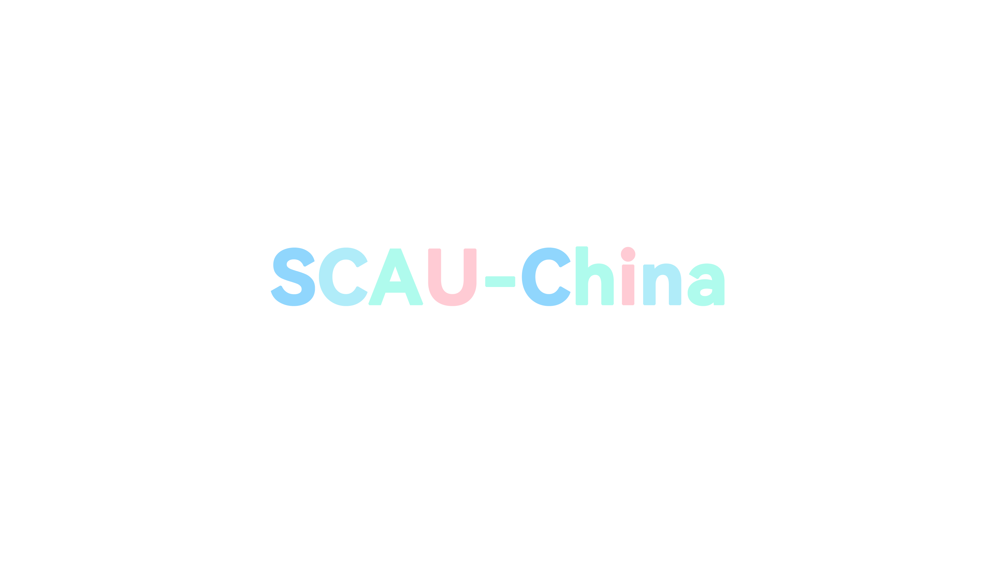
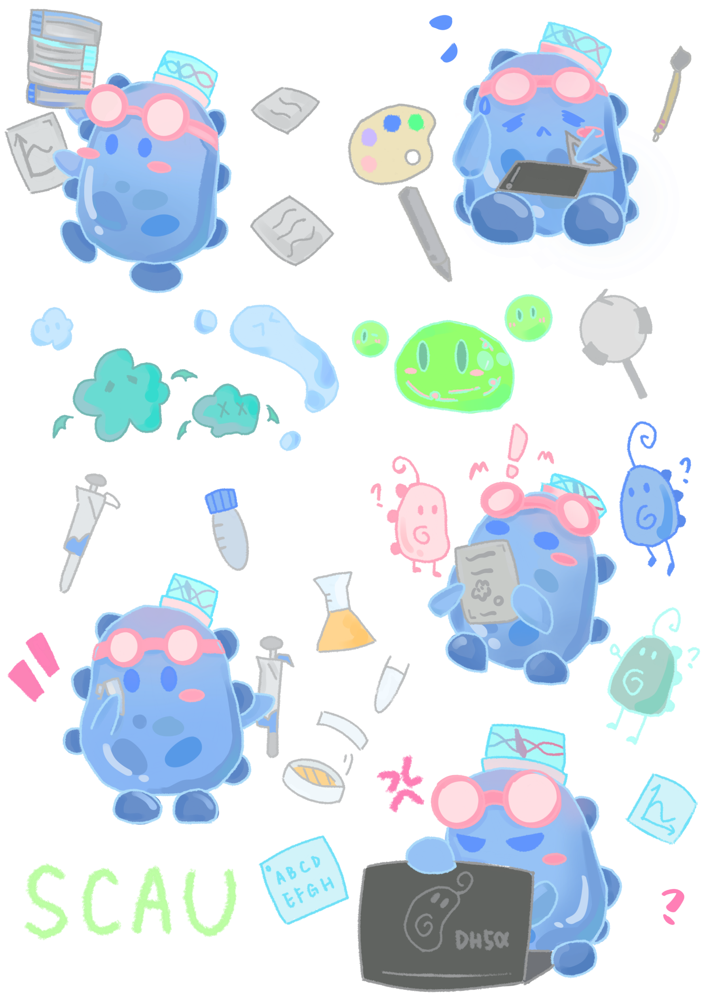
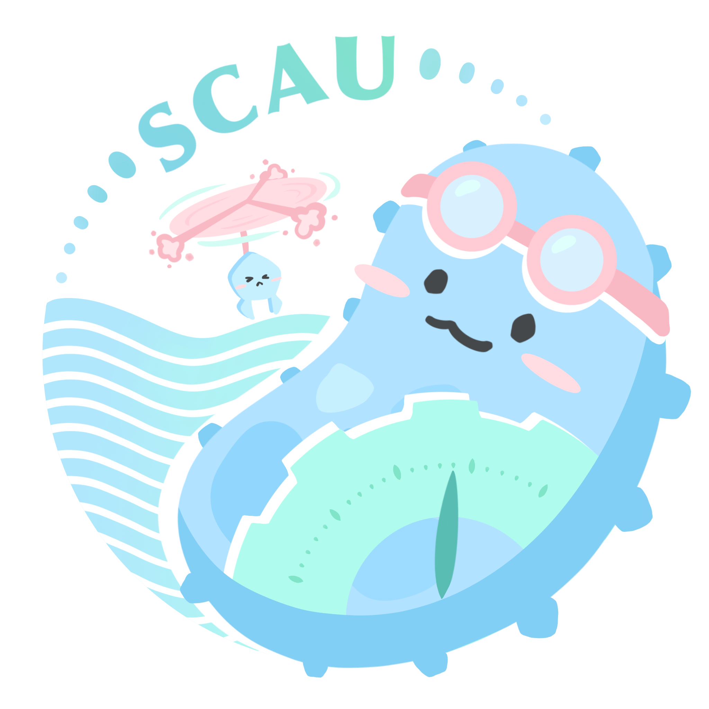

Art
Visual identity and outreach assets
The art page uses the named local asset folder: logo variants, dark-background logos, backgrounds, mascots, merchandise concepts, and school/iGEM identity materials.
Identity
The project already has a recognizable visual system.
The logo and background assets can support a consistent wiki style. The current visual direction is bright, biological, and outreach-friendly, which fits a water-monitoring project aimed at both technical and public audiences.




Application
Art assets support outreach, not just decoration
The supplied art material includes visual pieces for introductions, team wear, booklets, seed cards, seals, and interactive merchandise. These can make human-practices activities more approachable.
The wiki uses these visuals as a design system and a record of communication materials.
Asset library



Merchandise and education
Physical outreach materials can carry the project into schools and public events.
Booklets, seed cards, seals, and shaker-keychain concepts are present in the ART folder. A final page should explain where each item was used and what audience it served.
Content pending
Information intentionally left blank
These items are not available in the current verified materials.
- Final design rationale
- Credits for individual art contributors
- Usage photos from outreach events
- Downloadable design source files